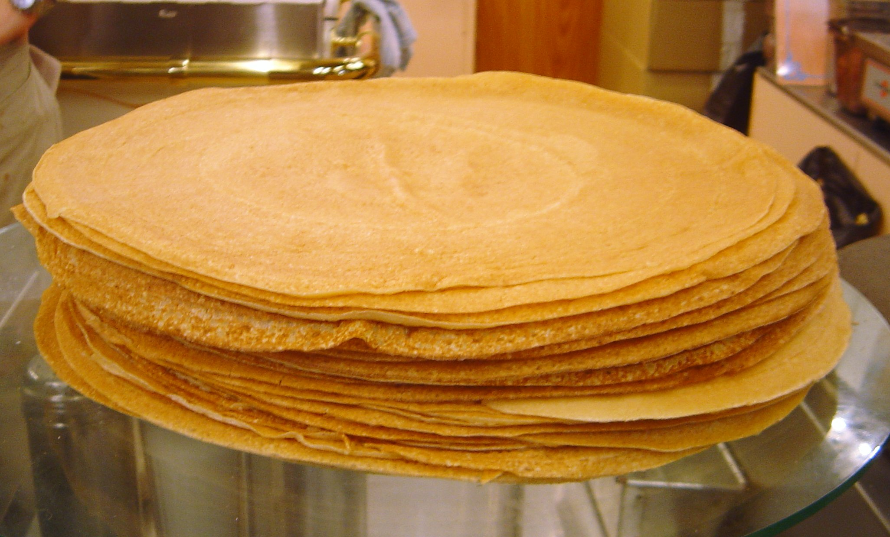

Home
Palačinky

Description
Tenké palačinky z několika základních surovin, které zvládneš připravit za chvíli. Těsto se smaží na pánvi do zlatova a pak se plní podle chuti, třeba marmeládou, tvarohem, ovocem nebo čokoládou.
Ingredients
- 120 g hladké mouky
- 250 ml mléka
- 1 vejce
- 1 lžíce cukru
- špetka soli
- olej nebo máslo na pánev
- marmeláda, tvaroh, ovoce, čokoláda.. podle chuti
Steps
- Do mísy dej mouku, cukr a sůl, přidej vejce a postupně přilévej mléko za stálého míchání, dokud nevznikne hladké řidké těsto bez hrudek. Nech ho 10 minut odpočinout.
- Rozehřej pánev na středním ohni a lehce ji potři olejem nebo máslem.
- Nalij na pánev naběračku těsta a rozlij ho do tenké vrstvy. Smaž asi 1–2 minuty, až budou okraje zlatavé, pak obrať a smaž ještě asi minutu.
- Hotovou palačinku potři náplní podle chuti, smotej nebo přeložit a podávej.
Dobrou chuť!